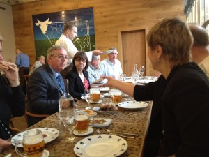

Selected Newsletter
News | Diary | Newsletter | Newsletter Archive | Seminars
27 July 2012
MirandaNet Summer 2012 Newsletter
Dear MirandaNetters
Our main concern in England as we go into the new academic year is the lack of confidence in schools about the value of digital technologies now that the ICT curriculum has been disapplied for 2 years in the UK. We are, therefore, inviting international educators, policy makers and developers to share strategies and develop new way of professional working and providing evidence. The intention is that as a community, we can better influence the exploitation of digital technologies in schools in the future.
We hope we will, therefore, see as many members as possible, face to face and online at our CPD event from November 5th-7th 2012 in Bedford for "Exploring Education Futures: linking digital technologies, grassroots practice and the making of policy". This is a follow up on the issues we identified at the Prague conference in June. You can sign up for the three days or one or two via the link in the on-line summer newsletter where we also cover a range of topics that have occupied our international members this year.
The Topics in the summer newsletter are:
Next activities
- Exploring Educational Futures, a MirandaNet CPD event, Nov 5th - 7th, 2012, Bedford;
- MirandaNet development of Open Educational Resources for HEA/JISC/ITTE;
- MirandaMods at the Education Innovation Show, Manchester, March 8th/9th 2013;
- ITTE conference including a MirandaMod : July 10th - 13th, 2013.
Reports and resources from activities
- A MirandaMod, St Anne's College, Oxford, July 5th, with ITTE colleagues: report;
- Miranda's 20th birthday unconference, Poskole, Prague, June 2012: report;
- Poskole proceedings and resources: June 2012;
- MirandaNet awards in Prague.
MirandaLink debates
- The disapplication of the ICT Curriculum in England;
- Nobody died of PowerPoint!
MirandaNet Associates
- Membership offers from LightSpeed, Iris Connect and, Immersive Education;
- Three new partnership with: HANDSON, an EU project; Education Futures Collaboration Trust; and the Future Learning Research Centre.
Research opportunities
- Research exchange
- Call for papers from Greece
The full newsletter follows:
The 'summer' break
- Spot the Tiara
Summer has just arrived in England after a very wet and cold June - perhaps due to the melting of the Ice Cap? However, our international colleagues will be aware that the rain did not dampened our enthusiasm for the Queen's Jubilee. It was a pity, though, that watching the flotilla on the Thames I had to wear my celebration tiara on top of my anorak hood! But it was worth it to see Senior MirandaNet Fellow, Professor Marilyn Leask, equally wet, passing by on a narrow boat, representing the Bedford and Milton Keynes Waterway, a canal network.
- Before the wetting
The WaterWay runs through Bedford where you will find the University of Bedfordshire - Miranda's new home. On 5th, 6th and 7th November 2012 we will be running a MirandaNet conference in Bedford,
On 5th, 6th and 7th November 2012 we will be running a MirandaNet conference in Bedford, Exploring Educational Futures. Vanessa Pittard, UK Department of Education, will be joining us in a symposium on global ICT policies on the 6th November when there will also be a MirandaMod from 1600-1800 (GMT). Boats will be involved - more news below.
Another chance for members to meet up is when we partner colleagues in ITTE in their annual conference from July 10th- 13th 2013 at Bedfordshire University in Bedford again. We will be publishing details soon.
Meanwhile here are the topics in this newsletter:
Next activities
- Exploring Educational Futures, a MirandaNet CPD event, Nov 5th - 7th, 2012, Bedford;
- MirandaNet development of Open Educational Resources for HEA/JISC/ITTE;
- ITTE conference including a MirandaMod: July 10th - 13th, 2013.
Reports and resources from activities
- A MirandaMod, St Anne's College, Oxford, July 5th, with ITTE colleagues: a report;
- Miranda's 20th birthday unconference, Poskole, Prague, June 2012: a report;
- Poskole proceedings and resources: June 2012;
- MirandaNet awards in Prague.
MirandaLink debates
MirandaNet Associates
- Membership offers from LightSpeed, Iris Connect and, Immersive Education;
- Three new partnerships: with HANDSON, an EU project; Futures Education Collaboration Trust; and the Future Learning Research Centre.
Research opportunities
MirandaNet newsletter
Next activities
Exploring Education Futures: linking digital technologies, grassroots practice and the making of policy 5/6/7th November 2012
This professional development event is organised by the MirandaNet Fellowship, Education Futures Collaboration, and the Future Learning Research Centre, University of Bedfordshire. It will be a three day international professional development event in 5th-7th November 2012 where we are proposing new ways of working to influence the future of policy and practice collaboratively - inviting educators, developers of digital education technologies and government policy makers. This process has been developing over the last thirty years. The work at this conference will take further the issues discussed at: the MirandaNet Poskole conference in Prague: the ITTE teacher education conference in Oxford, two Education Futures Collaboration in London and Wolverhampton; and initiatives being developed by the UK Coalition for evidence based education. We will keep you posted on the submission dates for abstracts.
Meanwhile you can learn more and sign up for the conference here.
MirandaNet development of Open Educational Resources for HEA/JISC/ITTE
The MirandaNet team will be responsible for developing four Open Educational Resources units during August. We will be mapping these resources on a digital concept map for easy navigation. These maps will be open to all members in the autumn as well as the course units that accompany them. Meanwhile we would welcome any resources you can provide so that we can make the maps as rich as possible.
Email the unit leaders if you would like to make a contribution:
Curriculum Specific Resources – Applying, evaluating and creating curriculum specific resources, including OERs in practice including creative commons, storing, using, sharing, evaluating and co-creation of OERs (searching for and exploiting resources via the internet, including IPR and Creative Commons etc): Theo Kuechel <theo.kuechel@gmail.com>
e-Tools for Teaching and Learning - Identifying, selecting, modifying, using and applying e-Tools for teaching and learning purposes: Leon Cych <leoncych@gmail.com>
Professional Development and Researching Practice - Using e-tools for researching practice, collaboration and management (module review, reflecting and transforming practice): christina@mirandanet.ac.uk
Online Community Working - engagement with professional networks (professional versus social networking) for academics (CPD): John Cuthell <john.cuthell@mirandanet.ac.uk>
Education Innovation Conference & Exhibition: March 8th & 9th 2013 at Manchester Central
Christina Preston has just agreed to speak at this national conference and exhibition. We also plan to run two MirandaMods. The conference is a new venture, all about harnessing technology to inspire education professionals and create a better educative environment. It will feature the leading names from the worlds of technology and education who will come together to provide advice, guidance and ideas to education professionals from primary right through to adult education.
Reports and resources from MirandaNet activities
MirandaMod July 5th 2012, ITTE Oxford
We ran a MirandaMod on July 5th at the ITTE conference at St Anne's College, Oxford, Based on Professor Leask's keynote: Using global communications e-tools to build our collective professional knowledge as well as the evidence base for policy and practice.
Issues the participants raised were:
- What is the value of professional communities of working online?
- Is this the way for educators to use technology to work smart?
- Is collaboration realistic for more than 10% of academics - what are the barriers to changes in working practices?
- Is online engagement one means of keeping policy makers and teachers up with new research findings?
St Anne's is not a medieval college but a new architect-designed concrete building with no mobile service and no effective wifi. For the first time we were not able to video stream the MirandaMod to our members nor provide the connections we required to video stream to members or use Twitter, Flash meeting or the concept map.
Nevertheless thanks to Iris Connect who were videoing the event and Light Speed who provided the sound amplification we have excellent resources that are being posted for members' comments. For those who are interested in this topic MirandaNet also run a range of bespoke courses on building professional communities in our iCatalyst Continuing Professional Development programme. Email enquiries@mirandanet.ac.uk for more information.
Miranda's 20th birthday in Prague, 6th - 8th June 2012
In contrast to England, the weather was wonderful in Prague and our surroundings were beautiful. Dr Bozena Mannova, who set up the Czech Miranda in 1994, arranged the conference in Hotel Adalbert, Prague 6 in the grounds of the Monastery Brevnova, a newly converted medieval monastery. We called the conference Poskole in order to reference our Czech members organization: Poskole means ‘homework’ - a kind of joke for Czech teachers.
Thirty participants from Bulgaria, England, Germany, Slovakia, The Czech Republic and The Netherlands met together to share the latest ideas about educational innovation. Many thanks to Steljes who sponsored who sponsored the social programme and the Czech Technical University, ACM chapter.
Our topic was: What does the 21st century teacher need to know about digital technologies, and why? And how will their prowess be assessed?

The MirandaNet Fellowship organized the conference in partnership with Future Learning Research Centre, University of Bedfordshire.
{kind=link}
{kind=link}
{kind=link}
The design of the new Czech Technical University was a stimulating environment with political cartoons on the walls by a Romanian artist and nearly one million books
{kind=link}
{kind=link}
- 
- Katya, Mirka and Lawrence considering the menu - all beef!
{kind=link}
We did not neglect visiting Prague centre, thanks to Bozena Mannova's organisation of the social programme: we attended a concert in Wenceslas Square and Miranda's 20th Birthday Party was held round the corner at the CESTR Restaurant in Prague. We thought the recent decision to award a Michelin Star was well judged.
Poskole unconference proceedings June 2012
MirandaNet members' priorities this year were summarised in the title of the unconference: What does the 21st century teacher need to know about digital technologies, and why? And how will their prowess be assessed?
In the first place our aim was to come to some conclusions about the international MirandaNet perspective on the main topic in order to write briefing papers for policy makers. One outcome has been the event at Bedford Exploring Education Futures, 5th - 7th November.
Our second aim was to investigate how we could extend this opportunity to support professionals who want to learn collaboratively across national boundaries using communications technologies, the MirandaMods, to underpin professional collaborative thinking, research questions and policy making. As a result we invite members to be actively involved as partners in writing proposals for funding that we are developing in the are contributing to the plans for a purpose-built collaborative learning facility on the Luton Campus of the University of Bedfordshire. The platform we are using for our collaborative working is being developed by the Education Futures Collaboration.
In the full report we have included the links where members can explore subjects that interest them in more detail. There are also links to the draft policy document and an invitation to members to join us in the resulting working parties that will be one aspect of the follow up unconference in November 5th, 6th, 7th 2012.
MirandaNet awards
At the 20th birthday party for Miranda, who was born in 1992, David Obst, from Technische Universität Dresden, Saxony, Germany was awarded the Basia Korsak prize for his inspirational presentation about working with teachers. He is working on a PhD on the use of digital white boards in science education.
Rachel Jones, Leon Cych and Theo Kuechel were awarded Senior Fellowships for the strong support they have given to MirandaNet with particular reference to the development of the MirandaMods.
Jan Lepeltak and Professor Marilyn Leask were awarded Senior Fellowships because they have been active at the centre of the development of the MirandaNet Fellowship since the early 1990s. Dr Bozena Mannova, already a senior Fellow, was invited to choose her new title in thanks for the organisation of this international meeting of minds.
Katya Toneva and Lawrence Williams, who already have senior Fellowship awards, have chosen their new titles. They were both thanked for the valuable work they do for the MirandaNet charity, World Ecitizens.
Mirandalink debates
The disapplication of the ICT curriculum
If we teach today's students as we did yesterday's, we are robbing them of tomorrow. — John Dewey
The disapplication of the ICT curriculum in England will impact on English schools in September 2012, the new academic year. This UK government action is against the advice of the three main UK ICT organisations: MirandaNet, Nacce and ITTE. You will remember our MirandaLink debate when we agreed that the ICT curriculum needs updating and computer science introduced. However, we warned that disapplying the ICT curriculum in 2012 - and not introducing an new one until 2014 - will create a hiatus when schools can stop their computer activity. This has proved particularly seductive in academies where funds are not as plentiful as had been expected.
Nobody died from using Powerpoint!
A lively Mirandalink debate focused on the bet ways to use Powerpoint and other presentational tools like Prezi. We came to the conclusion that it is not the tool but the user who is responsible for the quality of presentations.
MirandaNet associate offers
Three of our associates have offers of support for members: LightSpeed who make sound equipment for teachers based on research into achievement; Iris Connect who have developed video cameras for classroom research; and Immersive Education, who have an offer on their adventure game creator, Mission Maker, that can be used for Computer Science classes.
Lightspeed Technologies provided the latest version of its mobile Redcat soundfield audio system to support the MirandaMod session run as part of this month’s ITTE conference at St Anne’s College, Oxford. The equipment immediately created a much improved level of speech intelligibility throughout the room and allowed both Marilyn Leask and Christina Preston to jointly present and manage the presentational and group discussion aspects of the session. The pass around microphone also helped facilitate the effective delivery of feedback from each of the working groups towards the end of the session.
It is often argued that it is only children up until the age of 15 years that require significantly enhanced speech intelligibility (+15dB - +20dB SNR) if they are to hear and understand what is being said. However, research in the USA has shown that if the signal-to-noise is insufficient, whether listeners are children or adults, they miss much of the message (Larsen, Vega and Ribera, 2008). The research showed that this was true to differing degrees in classrooms with both unsatisfactory and good acoustics.
Lightspeed Technologies, through its UK distributor, is happy to loan without obligation a couple of Redcat systems for 2-3 weeks trials to any educational institution that would like to test out the benefits of the system.
Please contact Graham Breakenridge, Director, Classroom Communications graham@classroomcomms.co.uk, Tel: 0845 643 5971 / Mob: 07515 103217 if you would like to take up this offer.
Iris Connect
IRIS Connect is based at the Innovation Centre, University of Sussex, and evolved from extensive research and practice into what actually works in adult education and CPD. IRIS Connect developed technology in order to meet the need for meaningful CPD which leads to enactment and change. The system provides a powerful web based lesson observation platform that utilises mobile video cameras which can be remotely controlled and clever on-line tools to deliver an holistic and transformational approach to CPD. The design is based on the needs of the teacher and has high levels of teacher permissioning and security.
Being web-based, the system allows the building of meaningful communities of practice within and between schools in a powerful new way. Individuals or groups can build their own collaborative video libraries on-line. Videos can be annotated and analysed with written and video comments, forms, instruments and reports to provide a rich contextualised dialogue.
IRIS Connect currently works with 250 schools, colleges and universities in the UK with a rapidly a growing number in Europe and Australia. Research and case studies are still considered core activities both for evaluation of impact and to inform the further evolution of the system. To further understand the rationale for IRIS Connect please read our latest White Paper ‘Going Beyond CPD’ on www.irisconnect.co.uk/goingbeyondcpd.
Immersive Education
Donna Burton Wilcock, a director of the software development company, Immersive Education, makes MirandaNetters an offer you cannot refuse, "In response to schools finding the price tag of £1495 for a perpetual site licence too high we have introduced a rental model at £295 per year. We need rather a lot of these to survive, but we want to see young people empowered and encouraged to have an interest in programming and computer program design. For more information about MissionMaker (3D role-playing game authoring tool) and recent developments with the Playful Shakespeare work at the IOE go to www.immersiveeducation.eu or email me donna@imed.co.uk.
Donna also talks about her commitment to educational software design. "If computer science, and more particularly programming skills, are to be taught at primary level, the subject needs to be fun. If it isn’t, the recommendations are going to have the opposite of the desired effect. That is, students will be switched off and never want to see another piece of code. Whilst Scratch and Kodu are free, they are not immediately engaging and the end results are often less than exciting. However, as the producer of MissionMaker (with the support of the Institute of Education, University of London), I would say that, but it is not without foundation. As well as talking with students and teachers, I have taught classes to make games both at primary and secondary level. The students are at once engaged and motivated despite the levels of concentration and learning needed. MissionMaker results in what Papert referred to as hard fun. My whole career in education has been devoted to finding kinds of work that will harness the passion of the learner to the hard work needed to master difficult material and acquire habits of self-discipline. ... Once I was alerted to the concept of "hard fun" I began listening for it and heard it over and over. It is expressed in many different ways, all of which all boil down to the conclusion that everyone likes hard challenging things to do. But they have to be the right things matched to the individual and to the culture of the times. These rapidly changing times challenge educators to find areas of work that are hard in the right way: they must connect with the kids and also with the areas of knowledge, skills and (don't let us forget) ethic adults will need for the future world. (Seymour Papert www.papert.org/articles/HardFun.html) Making games is both challenging and culturally relevant. Working in a Worcestershire secondary school recently, I was told that one of the young men in the group usually did nothing and was totally disaffected. He had been late coming to the group, had been disgruntled by the fact that he was expected to work and then was the first back after break and didn’t want to finish at lunchtime. He was all the time learning the fundamentals of object-oriented programming, as well as developing design skills, practising literacy in an authentic context and increasing his self-esteem as a learner. By the end of the morning had constructed a visually rich, 3D role-playing game that he could share with his friends and peers. This is, I believe, a learning experience that will stay with him: one of those memorable moments.
New partners
HANDSON, a Lifelong Learning EU project
Many thanks to Dr Katya Toneva who has worked hard on gaining us a partnership in the EU project HANDSON. Our partners are in: Catalonia, Greece, The Netherlands and Slovenia. Our project introduction observes that the pervasiveness of ICT often makes us forget these technologies are just the means to an end. Nowadays, most teachers face the incorporation of ICT tools in their teaching activities as a burden. However, ICT tools are not the problem per se. The encumbrance is being alone in the process of searching, selecting, setting up, including it in classroom, troubleshooting and evaluating its impact. The teachers that have the courage and time to go through this process tend to be successful but often end up unwilling to attempt it again. The Hands-On ICT (HANDSON) project aims at facilitating the integration of ICT tools in teaching and learning by developing a learning-by-doing environment to be explored by themselves or with the guidance of a mentor. The environment offers teachers a set of learning activities complemented with 1) the competences it addresses, 2) the lesson plan, 3) the open source ICT tool, 4) the open content, 5) a sandbox for the tool. In addition, teachers find a ready-to-use online space to bring students over to carry out the activities with the appropriate ICT.
Education Futures Collaboration Trust
www.educationcommunities.org/welcome.do
Led by Marilyn Leask and Sarah Jones, the aim of the Education Futures Collaboration Trust is to raise student attainment by professionalizing teaching. Marilyn Leask explained in in her ITTE keynote, "There are pockets of innovation, evidence-based practice and excellence in teaching and learning, all over the country, but if we are to succeed in a time of financial uncertainty and educational change, then we must act together to join these pockets up within a specialist environment, free from government financial control, which connects us and our ideas and aggregates our networks for the betterment of our profession and the learners".
We are already using this space for our conference organisation and working groups. Marilyn and I are keen to hear from any individuals or universities who want to join this policy and practice initiative. christina@mirandanet.ac.uk
Learning Futures Research Centre
In the early 199os research into teaching and learning in communities of practice was pioneered by a small group of MirandaNet Fellows that included Karen Cameron, John Cuthell, Niki Davis, Bryn Holmes, Christina Preston, Marilyn Leask, Bozena Mannova, Chris Yapp and Sarah Younie. In 2011 a partnership between the Learning Futures' Research Centre at University of Bedfordshire has reflected the appointment there of Dr Christina Preston as Professor of Educational Innovation.

Andrea Raiker, Group Head of LFRC
Christina Preston is working with Andrea Raiker, the Group Head of the Learning Futures Research Centre, on a series of joint activities on developing methodologies and research potential around communities of enquirers collaborating in physical and virtual spaces. These activities being developed through the collaborative MirandaMods are intended to push the envelope on collaborative professional knowledge creation face to face and on line.
Research opportunities
The research exchange
You may have noticed that as part of the new design for the MirandaNet Fellowship page we have started a research exchange. In the publications section we starting to list MirandaNet members' research recommendations as well as publications under our five research themes in this list: Braided Learning- building collaborative professional knowledge and the linked section, Innovative Approaches to using Multimodal Concept Mapping; the design and delivery of ICT professional development programmes: World Ecitizenship: and, Industry Education partnership.
The first recommendation is from Professor Mike Sharples, last of Nottingham University, who is newly appointed as Professor of Educational Technology at the Open University. He is one of the authors of a report highlighting ten new methods of teaching, learning and assessment, including social learning with e-books, seamless learning and personal inquiry learning. He explains that the purpose of the ‘Innovating Pedagogy 2012’ report is to guide teachers and policy makers in productive innovation."
Please send relevant titles for inclusion in the publications list. where we can share good research. If you are a MirandaNet member and you cannot download the text or presentation you want from the list, then ask me for a copy christina@mirandanet.ac.uk
Call for papers from Greece
I am looking for a MirandaNet scholar to work with me on a submission to Themes in Science and Technology Education. This offer of mutual writing support might suit a teacher who is undertaking a Masters or Ph.D study and needs to publish.
The journal is edited by our colleague, Professor Athanassios Jimoyiannis: some of you joined us in a MirandaMod about Web 2 and cognition from his university in Korinthos in 2010. This special journal issue will be devoted to research perspectives and innovative approaches about the Educational Web 2.0. with reference to applications such as blogs, wikis, social networking, podcasting, media sharing etc., that have received intense and growing educational and research interest. If you have some interesting data about the use of these applications in learning and teaching please get in touch. I need to know at the beginning of September 2012 because the submission of interest date is September 15th: christina@mirandanet.ac.uk
Signing out
I am just catching up with new members’ profiles and reading about some very interesting work. Do consider sharing your knowledge by writing an article to gain your Fellowship ... about 2,00 words or multimodal equivalent?
If you have been in MirandaNet for some time please up date your profile as they all come up top in a Google search about you...
I'll be interested to receive your comments on the newsletter items and the new website design.
Have a good summer whatever the weather. Hoping to see you at our next conference in November at Bedford.
Dr Christina Preston, Professor of Educational Innovation
[Back]